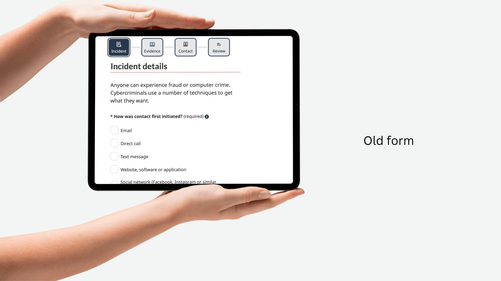
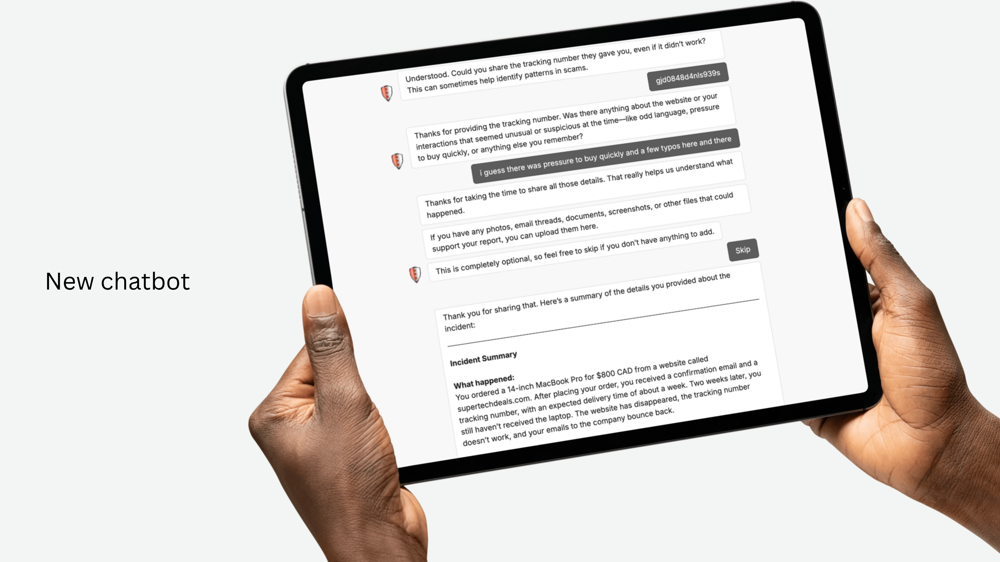

The NC3 had an idea for an AI chatbot but no data on why people don't report in the first place. Their internal process for running a survey would have taken months of panel clearance. I proposed Prolific instead: cheaper, faster, and we'd have data in weeks not months. 204 participants later, we had a clear picture that changed the entire product direction.
The biggest insight: the time and effort required to report was a stronger predictor of whether someone reports than the actual financial loss. A $3,000 investment scam and a $300 shopping scam had similar reporting likelihood. This meant the product needed to focus entirely on reducing friction, not on convincing people the incident was "serious enough" to report.
Traditional reporting forms front-load structured fields: checkboxes, dropdowns, categories. But when someone has just been scammed, they don't think in categories. They think in narrative. "This person called me and said I owed money and I panicked and bought a gift card."
The chatbot opens with "tell me what happened in your own words," then uses GPT-4 to identify what type of incident it is and ask targeted follow-up questions for the specific details law enforcement needs. The user never has to figure out which box they fit in. The system figures it out for them.


A phishing email and a $3,000 investment fraud are both cybercrime, but they need very different amounts of information to be useful to investigators. I built the AI to classify the incident from the user's narrative and route them accordingly: a quick path for spam, phishing, and suspicious messages, and a detailed path for fraud and financial loss.
The detailed path uses AI to check what the user already shared and only asks about what's missing. The quick path asks up to four follow-up questions then wraps up. In both cases, the AI uses an internal signal ("OK, NEXT QUESTION") to advance the conversation without visible buttons, keeping the flow feeling natural.
images/nc3-typebot-flow.jpgIn early testing, the chatbot was warm and reassuring at every turn. Some users appreciated it. Others found it performative. One participant said flatly: "I don't need you, AI chatbots, sympathizing with me." Another participant who did value the empathy said it "kind of makes our sense of victimization feel like it's been heard, even though it hasn't, because it's a computer."
I calibrated the tone to be supportive at key moments (the opening, after the user shares their story, at the end) but direct and efficient everywhere else. Match the user's energy: if they write a short answer, give a short reply. If they write a paragraph, acknowledge it properly. Don't be warm for warmth's sake.
The existing form asks for screenshots and documents early in the process. For someone who's just been scammed and is already unsure whether this is worth reporting, being asked to dig through their inbox for evidence before they've even told their story creates a wall.
I moved evidence collection to after the narrative and follow-up questions. By that point, the user has already invested in the report and the ask feels reasonable rather than intimidating.
One participant in the CRA gift card scenario hesitated when the chatbot asked for the gift card number. "I've just been scammed by giving a stranger a gift card number and I'm worried to do this again now." She understood intellectually that the chatbot needed it for the investigation, but the interaction pattern felt uncomfortably similar to the scam.
This is the kind of insight you only get from putting a working prototype in front of real people. No amount of wireframe review would surface it. It reshaped how I think about trust in AI interfaces: the context of the interaction matters as much as the content.
images/nc3-usability-chart.jpg"It felt like talking to a customer service representative... it basically guided you step by step."
The handover documentation included a step-by-step guide to rebuilding the chatbot from scratch, the exact AI prompts I wrote, explanations of how Typebot works for non-technical team members, and tips for maintaining reliability. I wrote it for an audience that might never have built a chatbot before, because the people continuing this work probably haven't.
The agency expected, at most, the foundational survey. I delivered the survey, a working AI prototype, statistically significant usability results, and documentation for continuity. In about 8 months, by myself, while also TAing and finishing my degree.